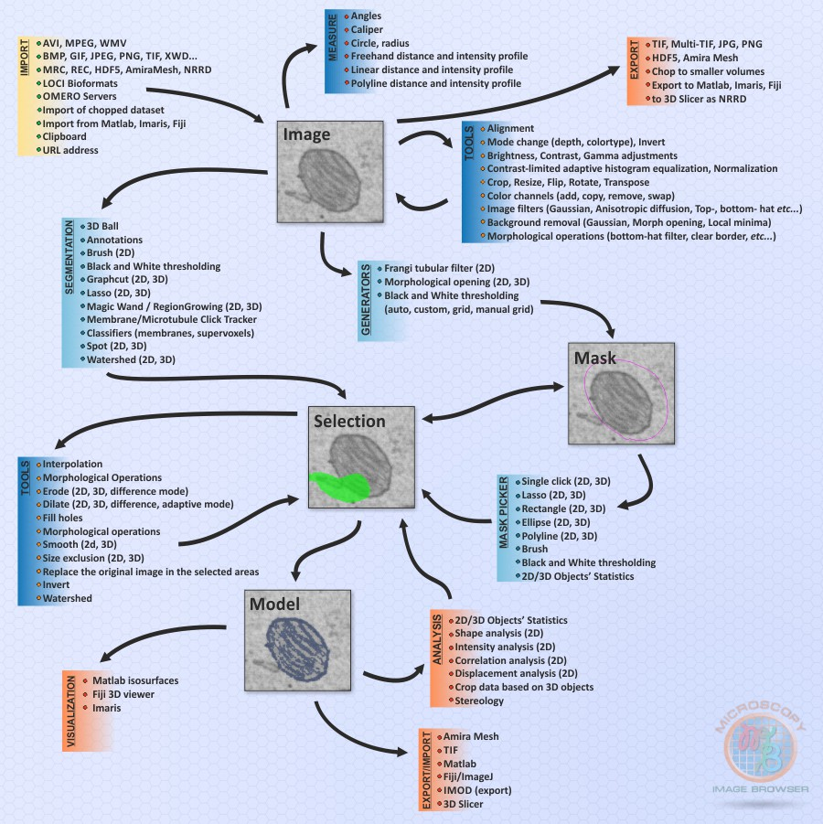

Microscopy Image Browser Features
Microscopy Image Browser is a high-performance software package for advanced image processing, segmentation and visualization of multidimentional (2D-4D) datasets. Microscopy Image Browser is written in Matlab, but has a user friendly graphical interface that does not requre knowledge of Matlab and can be used by anybody.
Please find a list of main features below
Back to Index
Contents
List of Key Features:
- Works as a Matlab program under Windows/Linux/MacOS Matlab, or as a standalone application (Windows 64bit)
- Open source, no license/fee required
- Extendable with custom plugins (tutorials)
- Load/Import multiple image and video formats using standard and custom-made readers, Bio-Formats (LOCI) reader, OMERO server, and direct import from Fiji
- Generation of multidimentional image stacks
- Brightness, contrast, gamma, image mode adjustments, resize, crop functions, rotate, etc
- Filtering of images with core Matlab and custom functions
- Tools for semi-automatic image segmentation (watershed, graphcut, classifiers)
- More than 8 different tools for manual segmentation in XY, XZ, and YZ planes
- Two types of interpolators: shape and line
- Quantification and statistical filtering in 2D and 3D of segmentation results
- Export models to Amira, Matlab, Fiji, IMOD, NRRD for 3D Slicer, STL and TIF formats
- Direct 3D visualization using Matlab isosurfaces, Fiji 3D viewer , and Imaris
- Log of performed actions
- Customizable Undo option
- Colorblind friendly default color modeling scheme
Scheme of Microscopy Image Browser
Connection diagram of available tools and layers. The opened images may be filtered and adjusted with number of standard/custom functions and further segmented either via the Mask route or directly with for example the brush tool and interpolation technique.

Back to Index